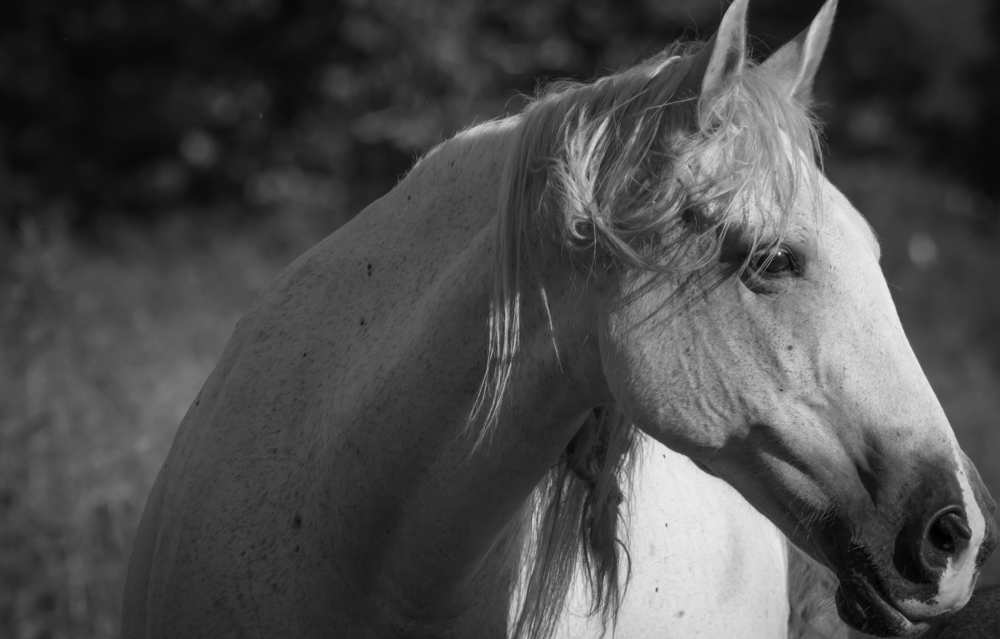

This is a photo she taken out of a group of wild horse

After a couple of years, She would start a job in life company as a claim
processor. Soon she was also working in photography, mainly working as an extra photographer for a small-time agency.